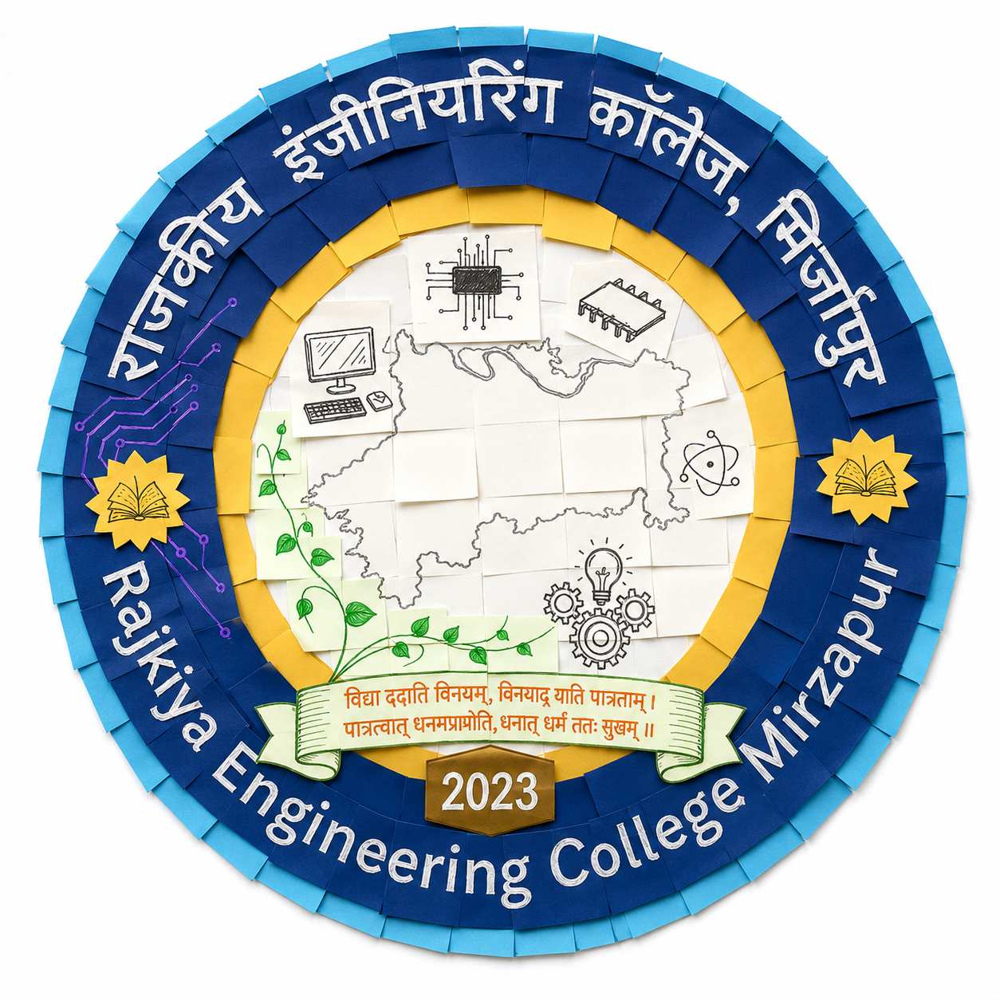
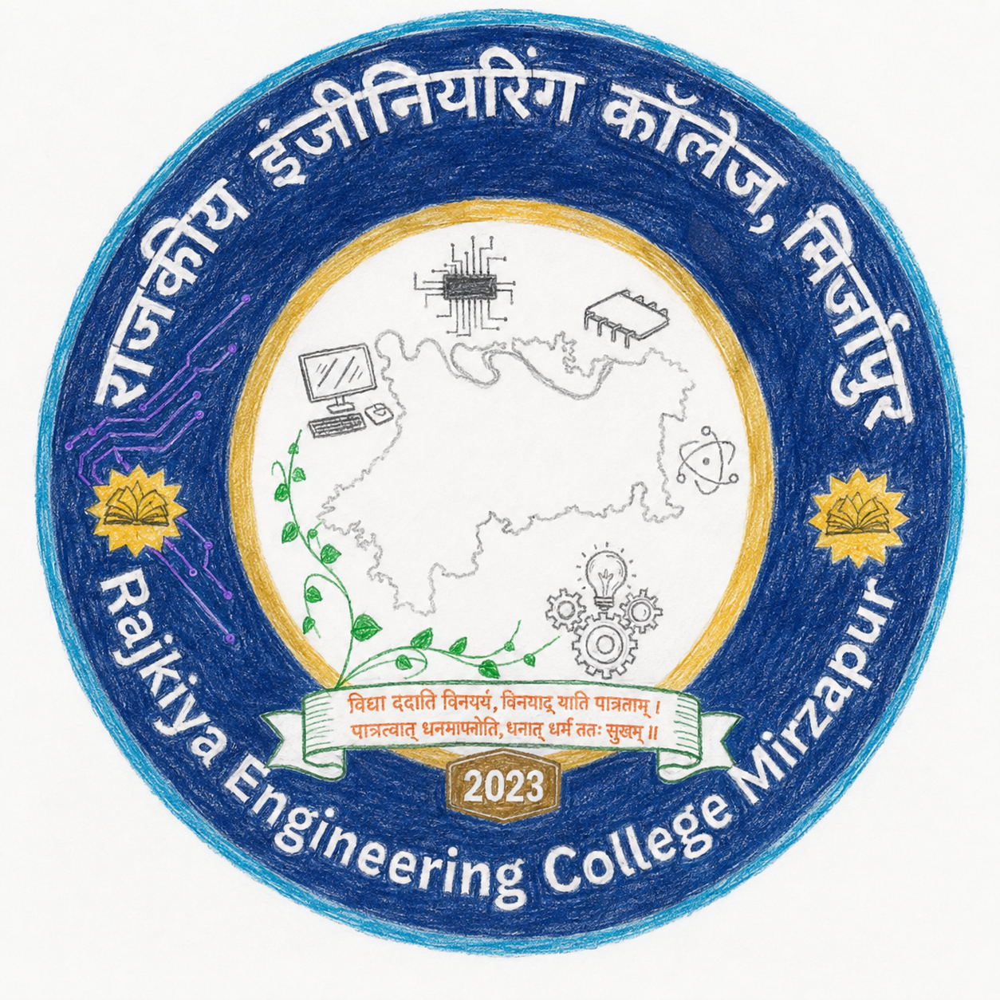
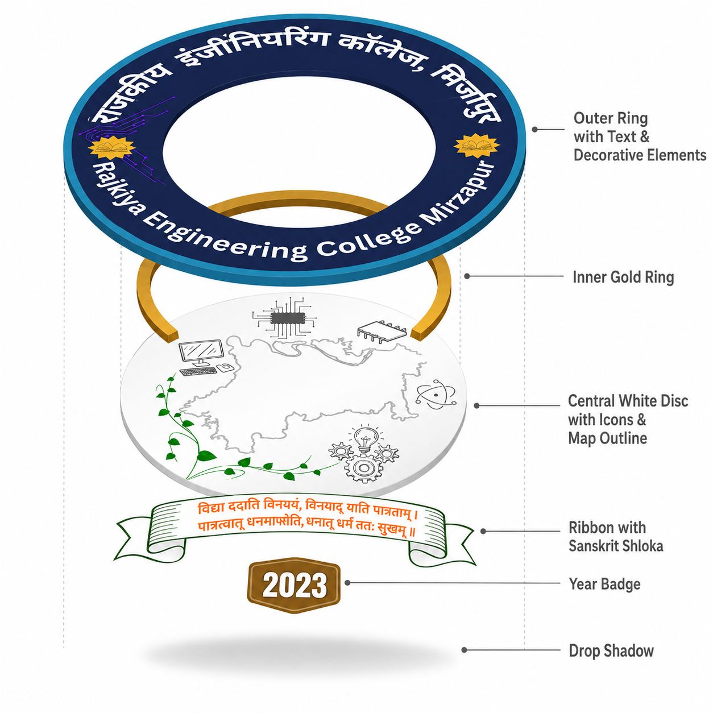

Technology Used: Canva

Papercraft Texture Concept

Hand-drawn Sketch Concept
A detailed breakdown of the structural and symbolic elements that form the identity of the institution.

Symbolizes unity and continuous learning. The dark blue color conveys trust, stability, and academic authority. The bilingual (Hindi & English) text ensures inclusivity, balancing regional heritage with global standards.
Gold is universally associated with excellence and illumination. The symmetrical golden book/sun symbols represent the dual pillars of learning: rigorous academic curriculum and hands-on practical experience.
Grounds the institution in its local roots featuring the Mirzapur map. It is surrounded by engineering motifs (microchips, gears, atom) showcasing technical focus, intertwined with a green vine symbolizing sustainable, organic growth.
The ribbon bears a profound Sanskrit verse, connecting the college to ancient Indian wisdom and serving as a moral compass. The "2023" badge permanently commemorates the foundational year of the college.
Insights into the vision, symbolism, and design process behind the logo.
The primary vision was to establish a distinct, memorable visual identity that encapsulates the college's core values. I wanted to create an emblem that is instantly recognizable and accurately represents the institution's commitment to academic and technical excellence.
I was inspired by traditional academic seals and globally recognized institutional emblems. The circular shape symbolizes unity, continuous learning, and a holistic approach to education, making it the ideal foundation for a college logo.
Dark blue was intentionally chosen to symbolize trust, stability, and academic authority. Drawing inspiration from established, world-class institutions, this color establishes a strong, reliable foundation for the college's public image.
Using both Hindi and English reflects a commitment to inclusivity and accessibility. It effectively balances our deep respect for the local heritage and regional language with the global standards of modern engineering education.
The central map grounds the institution in its geographical roots. By featuring the actual map of Mirzapur, the logo fosters a strong sense of local pride and community connection, visually stating exactly where our technological journey begins.
These icons are a direct visual communication of our diverse academic offerings. They represent the core branches of the college—such as Computer Science, Information Technology, Electronics, and Electrical Engineering—highlighting our focus on innovation and technological advancement.
The green vine symbolizes sustainable growth, vitality, and a commitment to an eco-friendly campus. It represents the organic growth of knowledge within the students and promotes a harmonious balance between technology and nature.
These twin symbols represent the dual pillars of learning: academic curriculum and practical experience. Placing them symmetrically provides the design with aesthetic balance and structural harmony, reinforcing the idea of a well-rounded education.
Gold is universally associated with excellence, prestige, and illumination. Inspired by globally recognized hallmarks of achievement, I paired the gold with the dark blue to create a striking contrast that elevates the logo's professional and prestigious feel.
The verse deeply connects the institution to ancient Indian wisdom. It reinforces the timeless educational philosophy that true knowledge brings humility, worthiness, and ultimate prosperity, serving as a guiding moral compass for the student body.
The badge commemorates 2023 as the foundational year of the college. It marks the official establishment and the welcoming of the inaugural batch, serving as a permanent historical touchstone in the logo.
The curved typography was chosen to seamlessly harmonize with the circular emblem. It ensures clear readability of both prominent languages while gracefully enclosing the central motifs, keeping the design clean and structurally sound.
Integrating the Mirzapur map was the most challenging aspect. It took several days of conceptualizing to balance geographical accuracy with aesthetic simplicity, ensuring it anchored the center of the logo without cluttering the surrounding technical elements.
This logo tells the story of an institution deeply rooted in its local culture and geography—represented by the Mirzapur map and Sanskrit verse—while simultaneously reaching for global technological excellence through its engineering motifs. It is a story of tradition meeting innovation, built on a foundation of trust and academic prestige.
I want them to feel a profound sense of institutional pride and inspiration. The logo should evoke the confidence that they are part of a trusted, forward-thinking community that honors its cultural roots while boldly shaping the future of engineering.